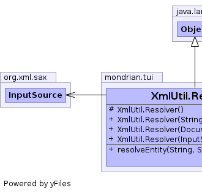
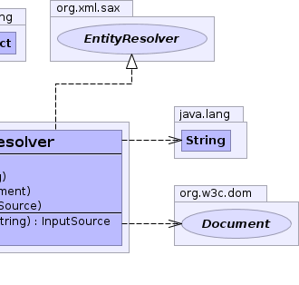

public static class XmlUtil.Resolver extends Object implements EntityResolver
 |
 |
| Modifier | Constructor and Description |
|---|---|
protected |
XmlUtil.Resolver() |
|
XmlUtil.Resolver(Document doc) |
|
XmlUtil.Resolver(InputSource source) |
|
XmlUtil.Resolver(String str) |
protected XmlUtil.Resolver()
public XmlUtil.Resolver(Document doc)
public XmlUtil.Resolver(String str)
public XmlUtil.Resolver(InputSource source)
public InputSource resolveEntity(String publicId, String systemId) throws SAXException, IOException
resolveEntity in interface EntityResolverSAXExceptionIOException